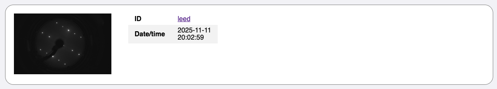

Extending Functionality
This section provides information about how to extend the capability of
proespm in order to process data files created by scietific measurements that
are then included in the resulting HTML report. In short, the following steps
are necessary:
- Create a class for your measurement file that implements the
Measurementinterface - Create a Jinja2 template for your measurement
- Make sure your file extension is allowed
- Register your measurement file by file extension (and if needed additional
criteria) in the
create_measurement_objsfunction inprocessing.py
These steps are further explained in the following accompanied by the practical
example of the existing Image measurement which is responsible for handling
simple PNG and JPEG images. The resulting entry in the HTML report will look
like this:

See the full report example for context and other measurement entries.
1. Create a class for measurement file
For your class to implement the Measurement interface, it needs to define the
following methods:
class Measurement(ABC):
"""Interface for a scientific measurement file."""
@abstractmethod
def __init__(self, filepath: str) -> None:
...
@abstractmethod
def m_id(self) -> str:
"""Unique measurement identifier."""
...
@abstractmethod
def datetime(self) -> datetime.datetime:
"""Date and time of the measurement."""
...
@abstractmethod
def process(self, config: Config) -> Self:
"""Processing of the measurement."""
...
@abstractmethod
def template_name(self) -> str | None:
"""Name of the Jinja2 template used for HTML rendering."""
...
The __init__ constructor takes the full path to the measurement file as an
argument and is reposible for reading the file. Any additional fields that can
lated be used in the HTML template are defined here. m_id needs to return a
unique identifier for that measurement as a string. It is common to use the
filename without extenstion. The datetime method returns the date and time of
the measurement as a
Python datetime object,
which is used to order the measurements in the created HTML report
chronologically. In process, any logic additional to reading the file should
occur, e.g., image processing of SPM images or plot creation for spectroscopy
data. In this method, you also have access to the Config which holds the
information about the user-chosen colormap and color range. Last but not least,
template_name needs to return the name of the Jinja2 template which will be
responsible for rendering this measurement as HTML.
In our example for PNG/JPEG images, the resulting class looks the following:
import base64
import os
from datetime import datetime
from typing import Self, final, override
from proespm.fileinfo import Fileinfo
from proespm.config import Config
from proespm.measurement import Measurement
@final
class Image(Measurement):
"""Class handeling image files (.png, .jpg, .jpeg)"""
def __init__(self, filepath: str) -> None:
self.fileinfo = Fileinfo(filepath)
self.img_uri: str | None = None
self.slide_num: int | None = None
def encode_png(self):
"""Encodes an image to base64
Returns:
str: Data uri of the image
"""
with open(self.fileinfo.filepath, "rb") as f:
self.img_uri = (
f"data:image/{self.fileinfo.fileext};base64, "
+ base64.b64encode(f.read()).decode("ascii")
)
@override
def m_id(self) -> str:
return self.fileinfo.filename
@override
def datetime(self) -> datetime:
return datetime.fromtimestamp(os.path.getmtime(self.fileinfo.filepath))
@override
def process(self, config: Config) -> Self:
self.encode_png()
return self
@override
def template_name(self) -> str:
return "image.j2"
2. Create a Jinja2 template
Jinja2 is the template engine responsible for rendering HTML. For making your
template findable for the engine, it needs to be located in the templates
folder in src/proespm. The filename must match the string returned by the
template_name method of your measurement class. In our example this is
image.j2:
<div class="measurement-row">
<div class="stm_image_fw">
<img id="{{ measurement.m_id() }}" src="{{ measurement.img_uri }}" />
</div>
<div class="table_column">
<table style:"width=100%">
<tr>
<th>ID</th>
<td><a href="file:///{{ measurement.fileinfo.filepath }}">{{ measurement.m_id() }}</td>
</tr>
<tr>
<th>Date/time</th>
<td>{{ measurement.datetime().strftime("%Y-%m-%d <br> %H:%M:%S") }}</td>
</tr>
</table>
</div>
</div>
The only thing which is needed for all measurements is the first occuring
<div> which makes an entry in the resulting HTML report. In our example, the
image is included as HTML with an <img> tag. In its id attribute you can see
see the usage of the object measurement instanciated from our Image class
where we use its m_id.
Note
The objects of all classes that implement the Measurement interface
can always be accessed inside a template with the measurement variable.
The img_uri field which was created in the __init__ of Image and populated
in process (via the call to encode_png) is of course used as the src of
the <img>. As you can see, you have access to all fields and methods of the
class. It is best practice though too keep the logic inside the template simple
and implement as much as possible in the class itself.
3. Make sure your file extension is allowed
This is a simple one: Just open config.py and ensure the extension is listed
in the ALLOWED_FILE_TYPES tuple in all-lowercase letters. We want our Image
measurement to handle ".png", ".jpg" and ".jpeg" and as your can see, they
are listed here:
4. Register your measurement file
Open processing.py and have a look at the create_measurement_objs function,
which essentially is a giant match statement. Here, you need to add a case for
handeling the file type of your measurement file. For our example the following
case is used:
def create_measurement_objs(
process_dir: str, _log: Callable[[str], None]
) -> list[Measurement]:
# ...
case ".png" | ".jpg" | ".jpeg":
obj = Image(file_path)
measurement_objects.append(obj)
# ...
This simply means that for any file that has the above file extension and
Image object is created and added the the list measurement_objects. In some
cases, the file extension alone is not enough to unambiguously map a file
extension to a class (think of multiple different measurement methods that all
produce .csv-files). Have a look at other cases of the match statement to
see what other possibilities exist to uniquely map a file to its corresponding
class.